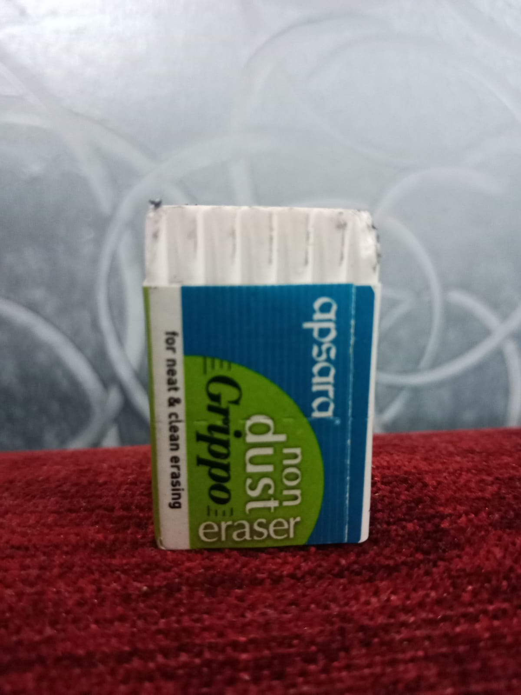
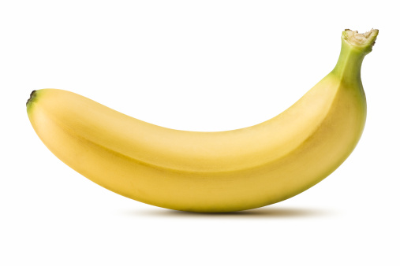
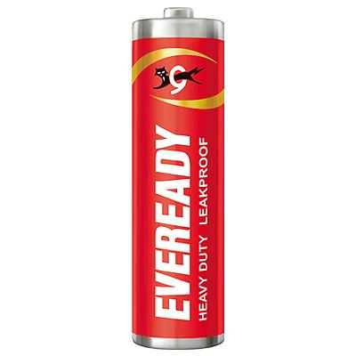
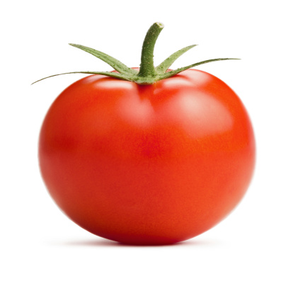
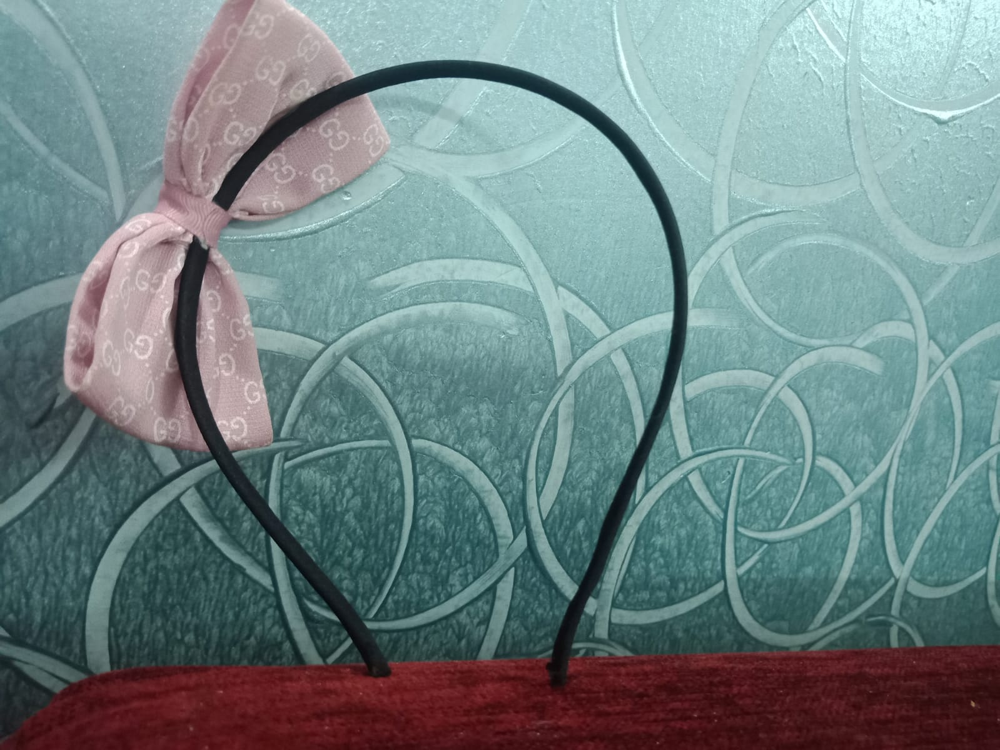
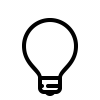

Case Study Between Google Lens
and
Mobilenet
Google Lens: Mug
Mobilenet : White Cup
Result : Mobilenet is accurate
Google Lens: Hot Wheels time Attaxi
Mobilenet : Toy Car
Result : Google Lens is accurate
Google Lens: Wooden Photo frame
Mobilenet : Banner
Result : Google Lens is accurate

Google Lens: Apsara Non dust Grippo eraser
Mobilenet : Eraser
Result : Draw
Google Lens: Nurse Doll
Mobilenet : Doll
Result : Mobilenet is accurate

Google Lens: A Banana
Mobilenet : Yellow Banana
Result : Mobilenet is accurate

Google Lens: Everyday Batteries
Mobilenet : Battery
Result : Google Lens is accurate

Google Lens: Tomato Emoji
Mobilenet : Tomato
Result : Mobilenet is accurate

Google Lens: Wallpaper
Mobilenet : Bow
Result : Mobilenet is accurate
Google Lens: one ruppees coin photo.
Mobilenet : A penny
Result : Google Lens is accurate

Mobilenet has discoverd 5 out of 10 images. Google Lens has dicovered 4 out of 10 images. Therefore Mobilenet is accurate.
 and
and  Mobilenet
Mobilenet